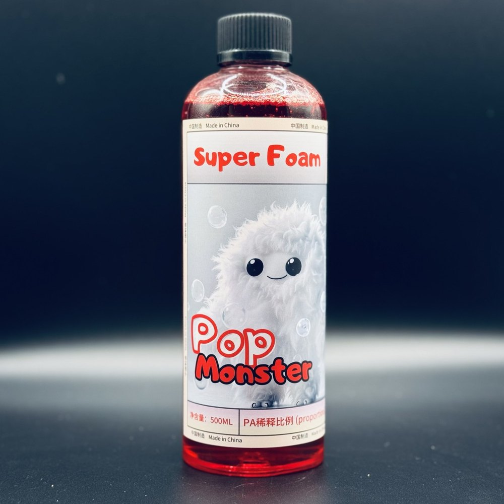

產品說明
一般洗車精泡沫掛不住、沖兩下就化掉，手套一擦就把砂粒拖在漆面上——泡沫洗車液走高濃縮路線，一瓶稀釋後可以做到約 50 公升的使用液，泡沫豐富細緻，用來把砂粒包覆浮起，減少擦拭時的刮傷風險。
規格
- 特性
- 高濃縮；一瓶稀釋後約可做出 50 公升使用液
- 稀釋比例
- 請依瓶身標示；或加 LINE 告知你用泡沫機還是手動噴壺，小編再提供對應比例
- 適用範圍
- 全材質車身外部清潔
怎麼用
- 先用清水或預洗劑把車身表面的砂粒與大顆粒污染沖掉。
- 依瓶身標示稀釋後，用泡沫機或噴壺讓泡沫均勻覆蓋全車。
- 讓泡沫停留一段時間軟化污垢，再用洗車手套從車頂往下、單方向直線擦拭，不要打圈。
- 從上到下分區沖乾淨，最後收水。
注意事項
- 不要在烈日曝曬、車身燙手的狀態下洗車，泡沫會太快乾在漆面上留痕。
- 洗車手套與毛巾要保持乾淨，砂粒卡在布料裡是刮傷的主因。
- 本支的酸鹼值與詳細規格請依瓶身標示為準，或加 LINE 向小編確認後再施工——不要照別支產品的比例調配。
- 建議配戴手套並保持通風；不慎入眼請以大量清水沖洗並就醫。
- 存放於陰涼避光處，避免高溫與陽光直曬，放在兒童拿不到的地方，不可吞食。
- 目前沒有可對外提供的完整成分表與安全資料表（SDS）；若你的工作環境需要這些文件，請先加 LINE 向小編確認。
常見問題
弱酸性對油脂類污染物去除力更強；中性配方更溫和，適合頻繁洗車（每週）。本品的酸鹼值與適用材質請依瓶身標示，或加 LINE 向小編確認後再施工。
不需要。手動噴壺稀釋後直接使用也很好，只是泡沫密度比泡沫機低。手動噴壺直接噴灑於車身後洗車手套擦拭同樣有效。
可依污染程度調整：輕度日常洗車用 1:50，中度污染用 1:30，重度污染或輪圈專攻用 1:20。原液不建議直接使用。
施工教學
同類商品


泡沫洗車液
確定要買就加入購物車，用 LINE 送出訂單；還不確定適不適合你的車，先在 LINE 問清楚再下單。